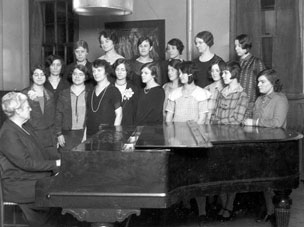
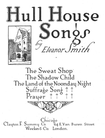

The Music of Protest and Hope in Jane Addams’s Chicago
Eleanor Smith was director of the Hull-House Music School during Jane Addams’ tenure as Head Resident. Hull-House music programs were central to the settlement’s mission and contributed to the development of talented young working class musicians across Chicago.
But another aspect of Smith’s work remains relatively unknown. In the years between 1900 and 1915, she composed a series of social protest songs Hull-House residents used for political organizing and culture building.
They were usually performed in Hull-House concerts attended by neighborhood residents, Hull-House residents, and, sometimes, prominent members of Chicago society.

And the performers were often students from the Hull-House Music School, including immigrant workers and the children of immigrant workers.
Jane Addams wished Hull House Songs to fill a void hidden in the intersection of American musical and political culture.
She differentiates Smith’s songs from old fashioned songs [that] with the exception of those of religion and patriotism, chiefly expressed the individualistic emotions of love, hope or melancholy.
Against this old fashioned standard, Hull House Songs presents the imperative
demand that socialized emotions should also find musical expression.
Like nations and religions, movements for social justice require art, and more particularly, song, to express, sustain, and inspire solidarity.
Thus, the songbook is intended to provide the inspiration and solace
that the manifold movements of our contemporaries…so obviously need.

In this sense, Hull House Songs might seem to resemble its historical contemporary, the Wobblies’ Little Red Songbook.
But against the Wobblies desire to fan the flames of discontent,
and their tendency to demonize capitalists and bosses, Addams argued that any critique of capitalism that simply attacked capitalists remained a partial representation, and produced an incomplete community.
So in her settings of the poems for Hull House Songs, Eleanor Smith expurgates any reference to class conflict and the privileges of the bosses and capitalists. The compositions collected in Hull House Songs are critiques of capitalism as a system, not capitalists as individuals. Both Smith's songs, and Addams’ essays on labor, attack the systemic elements of exploitation, while, at the same time, attempting to create solidarity between classes (against capitalism). In any case, this was the carefully crafted message behind Hull House Songs: Class struggle is against capitalism and exploitation, not against bosses and capitalists.
-- Adapted from Graham Cassano and Jessica Payette,Hull House Songs and thein Graham Cassano, Rima Lunin Schultz, and Jessica Payette (eds), Eleanor Smith’s Hull House Songs: The Music of Protest and Hope in Jane Addams’s Chicago (forthcoming, Brill).Public
Images courtesy of the University of Illinois Chicago, Special Collections.
Hull House Songs were recorded at the Varner Recital Hall, Oakland University, May 4th, 2015.
Edie Diggory: Producer
Terry Herald: Co-Producer, Recording Engineer
Kayvon Kashani-Gharavi: Assistant Engineer
Ellen Tunison: Assistant Engineer
These recordings were organized by Graham Cassano and funded by a grant from the Oakland University Department of Sociology, Anthropology, Social Work, and Criminal Justice. Special thanks to Terri Orbuch, Dorothy Nelson, Jo Reger, Henri Gooren, David Fasenfest, and Jackie Wiggins, for their support.
Graham Cassano is Associate Professor of Sociology at Oakland University in Rochester, MI. His most recent book, A New Kind of Public: Community, Solidarity, and Political Economy in New Deal Cinema, 1935-1948 (Haymarket 2015), examines the intersection of race, popular culture, and the U.S. labor movement in the early twentieth century.
Jessica Payette is Associate Professor of Music at Oakland University in Rochester, Michigan. She received her Ph.D. in musicology from Stanford University with research specialization in fin-de-siècle Vienna and twentieth-century opera and ballet.
Amanda Sabelhaus is a staff accompanist at Oakland University and a Touring Artist for the Michigan Opera Theatre. She has performed on the grand stage of Carnegie Hall and has served as the official accompanist for the Metropolitan Opera Council Auditions. Since 2012, she has served as a resident pianist at the Sir James Galway International Flute Festival held in Weggis, Switzerland. Amanda resides in Troy, Michigan with her husband and two teenage daughters.
Rima Lunin Schultz is the former Associate Director of the Jane Addams Hull-House Museum, University of Illinois at Chicago (UIC). Schultz is the editor of Urban Experience in Chicago: Hull-House and Its Neighborhoods, 1889-1963, an educational and scholarly website at UIC. She wrote the introduction to a new edition of Hull-House Maps & Papers (University of Illinois, 2007) and with Adele Hast, edited Women Building Chicago 1790 1990: A Biographical Dictionary (2001). Schultz serves on the Advisory Board of the Jane Addams Hull-House Museum, UIC, and on the Advisory Board of the Jane Addams Papers Project, Ramapo College. Her recent article, Jane Addams, Apotheosis of Social Christianity,
Church History (March 2015) is part of her revisionist work on Progressive reformer and peace activist Jane Addams.
Jocelyn Zelasko is a versatile musician and teaching artist who has performed a variety of music from classical to contemporary in festivals and concerts around the world, including Trinidad and Tobago, Greece, Canada, and the United States. In addition to her work as a performing artist, Ms. Zelasko is a lecturer of music theory and a PhD candidate at Oakland University in Rochester, Michigan.
March 16, 2016, 5pm
Varner Recital Hall
Oakland University
Rochester, MI
Check back for details
Saturday, August 22, 2015
Jane Addams Hull-House Museum
800 S. Halsted Street,
Chicago, Illinois.
Program
For more information, visit the Jane Addams Hull-House Museum:
800 S. Halsted Street
Chicago, Illinois
Museum Website